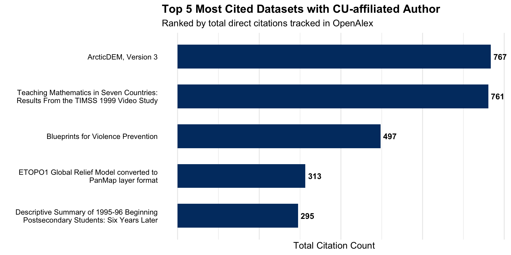
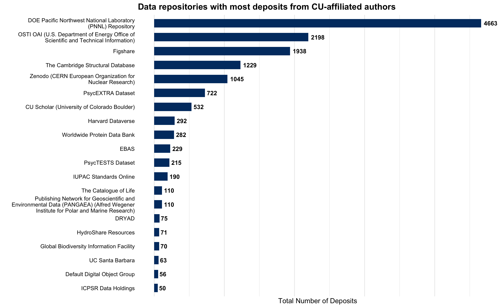
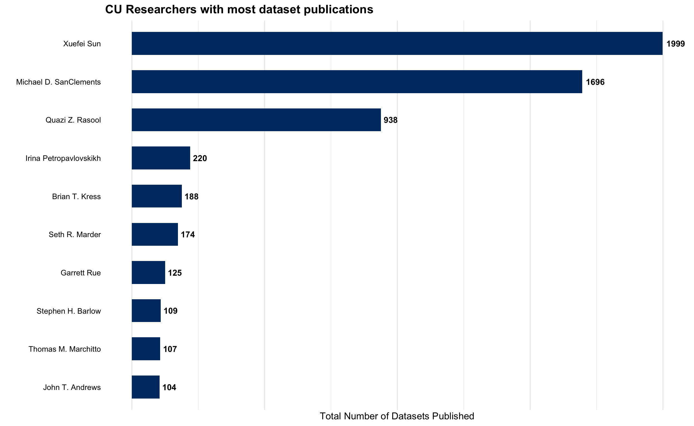
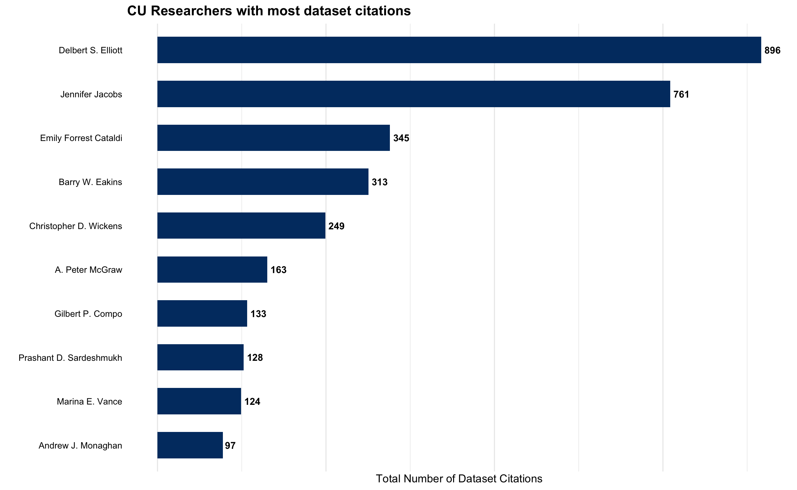

library(tidyverse)
library(openalexR)OpenAlex Audit of CU Boulder Datasets
Author
Aditya Ranganath
1 CU Scholar
We start by extracting CU Scholar datasets in OpenAlex. First, we’ll extract the CU Scholar’s OpenAlex ids.
Requesting url: <https://api.openalex.org/sources?search=CU%20Scholar>
ℹ Getting 1 page of results with a total of 1 record...Now, we’ll use the ID information to extract CU Scholar datasets:
Requesting url:
<https://api.openalex.org/works?filter=locations.source.id%3AS4306401957%2Ctype%3Adataset>
ℹ Getting 3 pages of results with a total of 470 records...We will write this dataset to a file named cu_scholar_datasets_base.csv:
cu_scholar_datasets_base contains 470 records/datasets, which is significantly less than the 657 datasets reported in the latest State of Open report. This might be driven by a mismatch between how objects are classified in CU Scholar and how they are classified by Open Alex (i.e. the “dataset” filter might be overly restrictive if OpenAlex interprets some CU Scholar datasets as articles instead). An alternate strategy for pulling CU Scholar datasets from OpenAlex is to extract all of the CU Scholar works indexed by OpenAlex, and then parse the “landing_page_url” field for the word “data”:
# extract all cu scholar works
cu_scholar_works <- oa_fetch(
entity = "works",
"locations.source.id" = combined_ids_string,
verbose = TRUE)
# extract cu scholar datasets by searching for "data" within the "landing_page_url" field,
# i.e. using a url parsing strategy
cu_scholar_datasets_alternate<-cu_scholar_works %>%
filter(str_detect(landing_page_url, "data"))The cu_scholar_datasets_alternate data frame contains 533 records, which is substantially more than cu_scholar_datasets_base; it looks like many of the “Media and Climate Change” datasets were classified by OpenAlex as “articles” or “other”, so they were dropped when using the “dataset” filter but picked up when parsing the landing page urls. However, the number of datasets in cu_scholar_datasets_alternate is still well well short of the number of datasets documented in the State of Open report. It could be useful to cross-reference the dataset(s) of CU Scholar datasets from OpenAlex with the dataset used for State of Open to try and identify which datasets are “missing”, and why they are not being picked up by OpenAlex.
We’ll write out cu_scholar_datasets_alternate to disk as “cu_scholar_datasets_alternate.csv”:
2 Datasets authored by CU researchers in other venues
To extract datasets published by CU researchers in any location, we’ll extract CU Boulder’s institutional ID in Open Alex, and then carry out a dataset search within oa_fetch() using this ID:
# extracts CU Boulder institutional information and assigns to "cu_boulder_metadata"
cu_boulder_metadata <-
oa_fetch(
entity = "institutions",
search = "University of Colorado Boulder")
# extracts CU Boulder openalex institutional ID and assigns it to "cu_inst_id"
cu_inst_id <-basename(cu_boulder_metadata$id[1])
# extracts cu-authored datasets in any location using "cu_inst_id"
all_cu_datasets <- oa_fetch(
entity = "works",
"authorships.institutions.id" = cu_inst_id,
type = "dataset",
verbose = TRUE)The resulting dataset, all_cu_datasets, contains 5171 datasets from 74 unique repositories. The repositories in the dataset are the following:
[1] "Harvard Dataverse"
[2] "Worldwide Protein Data Bank"
[3] "Water Resources Research"
[4] "Figshare"
[5] "PsycEXTRA Dataset"
[6] "IUPAC Standards Online"
[7] "Carbon Dioxide Information Analysis Center (CDIAC) Datasets"
[8] "Zenodo (CERN European Organization for Nuclear Research)"
[9] "Recherche Data Gouv France"
[10] "IIASA PURE (International Institute of Applied Systems Analysis)"
[11] "NSF Seismological Facility for the Advancement of Geoscience (SAGE)"
[12] NA
[13] "University of Groningen research database (University of Groningen / Centre for Information Technology)"
[14] "Artifact Digital Object Group"
[15] "Default Digital Object Group"
[16] "XRDS Crossroads The ACM Magazine for Students"
[17] "ICPSR Data Holdings"
[18] "Bristol Research (University of Bristol)"
[19] "UC Santa Barbara"
[20] "CU Scholar (University of Colorado Boulder)"
[21] "DRYAD"
[22] "Publishing Network for Geoscientific and Environmental Data (PANGAEA) (Alfred Wegener Institute for Polar and Marine Research)"
[23] "Global Monitoring Laboratory"
[24] "Earth Observing Laboratory"
[25] "DIGITAL.CSIC (Spanish National Research Council (CSIC))"
[26] "DOE Oak Ridge National Laboratory (ORNL) Repository"
[27] "Borealis"
[28] "Lasso NBDC Data Repository"
[29] "National Institute of Standards and Technology (NIST)"
[30] "DOE Lawrence Berkeley National Laboratory (LBNL) Repository"
[31] "National Oceanic and Atmospheric Administration (NOAA) National Centers for Environmental Information (NCEI)"
[32] "KNAW Research Portal (The Royal Netherlands Academy of Arts and Sciences)"
[33] "HEPData"
[34] "CGSPace A Repository of Agricultural Research Outputs (Consultative Group for International Agricultural Research)"
[35] "Neotoma Paleoecological Database"
[36] "Texas Digital Library (University of Texas)"
[37] "Forest Service Research Data Archive"
[38] "energyo"
[39] "JPL Data"
[40] "OSTI OAI (U.S. Department of Energy Office of Scientific and Technical Information)"
[41] "HydroShare Resources"
[42] "Mendeley Data"
[43] "Texas Advanced Computing Center"
[44] "USGS DOI Tool Production Environment"
[45] "Max Planck Digital Library"
[46] "National Institutes of Health, National Institute on Aging Genetics of Alzheimer's Disease Data Storage Site"
[47] "The Catalogue of Life"
[48] "Space Physics Data Facility"
[49] "European Synchrotron Radiation Facility"
[50] "CUAHSI"
[51] "Ministry of Culture and Education"
[52] "ALBA Synchrotron"
[53] "Institutional Repositories DataBase (IRDB)"
[54] "Purdue University Research Repository"
[55] "CORA.Repositori de Dades de Recerca"
[56] "DOE Pacific Northwest National Laboratory (PNNL) Repository"
[57] "Socio-Environmental Systems Modeling"
[58] "NERC Environmental Data Service"
[59] "Institut Laue-Langevin"
[60] "UC San Diego"
[61] "ZBW Journal Data Archive"
[62] "Otago University Research Archive (University of Otago)"
[63] "Murdoch University Research Portal"
[64] "Stanford Digital Repository"
[65] "Small Bodies Node SBN of NASA's Planetary Data System (PDS)- Archives"
[66] "Strasbourg Astronomical Data Center"
[67] "Research Data Repository, Duke University"
[68] "CaltechDATA"
[69] "Biological and Chemical Oceanography Data Management Office"
[70] "Global Biodiversity Information Facility"
[71] "Data Commons"
[72] "ScienceDB"
[73] "Data portal" This search picks up a relatively small number (29) of CU Scholar datasets; it’s not clear why, but OpenAlex may be having issues with reading the institutional ID of the depositor when it is entered into DataCite. It may also be driven by the fact that we only started explicitly tagging the institutional affiliation of the depositor in DataCite relatively recently.
We can delete the CU Scholar records in all_cu_datasets to generate a new dataset of CU-researcher-authored dataset publications in venues outside CU Scholar (all_cu_datasets_sans_cuscholar), which we’ll write out to disk as “all_cu_datasets_sans_cuscholar.csv”):
# extracts cu-authored datasets in repositories besides cu scholar
all_cu_datasets_sans_cuscholar<-
all_cu_datasets %>%
filter(source_display_name!="CU Scholar (University of Colorado Boulder)")
# writes "all_cu_datasets_sans_cuscholar" to disk
write_csv(all_cu_datasets_sans_cuscholar, "data-outputs/all_cu_datasets_sans_cuscholar.csv")We can combine the search results from the CU Scholar repository search (cu_scholar_datasets_alternate) with the results from the author search that excludes CU Scholar results (all_cu_datasets_sans_cuscholar) to generate a more comprehensive dataset that includes OpenAlex-indexed datasets from CU Scholar and other repositories that were published by CU authors (cu_datasets_combined):
We’ll write this dataset (which has 5590 records) to disk as “cu_datasets_combined.csv”:
It’s important to note that this is still likely a significant under-count of the number of datasets associated with CU researchers, since researchers do not always list institutional affiliations in the relevant metadata field when depositing datasets in external repositories (especially if there are many authors, and the CU author is not the depositing or corresponding author). We can try to build a more inclusive search net by extracting a dataset of CU-affiliated researchers (with researcher IDs), and then searching for datasets associated with these individuals. In particular, we’ll use the “last_known_institutions.id” attribute to return IDs for authors whose last known publication is associated with CU Boulder:
Now, we’ll extract OpenAlex author IDs from cu_authors and assign these ids to a vector named cu_author_ids:
Now, we’ll write a function, fetch_dataset_chunk() to extract datasets associated with the author IDs of researchers of interest.
# write processing function that takes a vector of researcher IDs and returns
# datasets associated with those ids
options(timeout = 600)
fetch_dataset_chunk <- function(id_vector) {
Sys.sleep(1) # pause before each request
combined_author_string <- paste(id_vector, collapse = "|")
oa_fetch(
entity = "works",
"authorships.author.id" = combined_author_string,
type = "dataset",
verbose = TRUE
)
}Before applying fetch_dataset_chunk() to cu_author_ids, we must chunk cu_author_ids into groups of 50, since OpenAlex limits batched OR filters. We’ll assign the resulting list of chunked IDs (where each list element is a chunk of ~50 ids) to author_chunks:
Finally, we’ll iteratively pass the ID chunks in author_chunks to the fetch_dataset_chunk, and bind the elements of the resulting output list into a dataframe that removes any duplicated datasets:
We will write cu_researcher_datasets_master to disk:
To create the most comprehensive dataset of published datasets associated with CU, we’ll append the records in cu_researcher_datasets_master and those in cu_datasets_combined, while removing any duplicated records. We’ll assign the resulting dataset to cu_datasets_comprehensive.
We’ll generate a new column, named “authors”, that prints all of the authors associated with a dataset, separated by a semicolon (currently, the author metadata is nested within the “authorships” column, and therefore inaccessible when exporting the data from R):
# creates columns for author name, open alex id, and ORCID id from author data in "authorships" column
cu_datasets_comprehensive<-cu_datasets_comprehensive %>%
mutate(
authors_name=map_chr(authorships,
function(x){
x$display_name %>%
na.omit() %>%
str_c(collapse="; ")
}
),
authors_oa_id=map_chr(authorships,
function(x){
x$id %>%
na.omit() %>%
str_c(collapse="; ")
}
),
authors_orcid_id=map_chr(authorships,
function(x){
x$orcid %>%
na.omit() %>%
str_c(collapse="; ")
}
)
) We’ll also generate analogous columns that extract the CU-affiliated authors of the datasets:
cu_datasets_comprehensive<-cu_datasets_comprehensive %>%
mutate(
cu_authors_name=map_chr(authorships,
function(x){
x %>%
filter(basename(id) %in% cu_author_ids) %>%
pull(display_name) %>%
na.omit() %>%
str_c(collapse="; ")
}
),
cu_authors_oa_id=map_chr(authorships,
function(x){
x %>%
filter(basename(id) %in% cu_author_ids) %>%
pull(id) %>%
na.omit() %>%
str_c(collapse="; ")
}
),
cu_authors_orcid_id=map_chr(authorships,
function(x){
x %>%
filter(basename(id) %in% cu_author_ids) %>%
pull(orcid) %>%
na.omit() %>%
str_c(collapse="; ")
}
)
) We’ll now write out cu_datasets_comprehensive to disk:
3 Exploratory Analysis and Visualization
We’ll use cu_datasets_comprehensive as the basis for some basic exploratory analysis and visualization, since it’s the most comprehensive dataset we’ve generated.
3.1 Most cited datasets with a CU author
First, we’ll plot the titles of the five most cited datasets with a CU author:
# generates dataset of top five papers
top_papers_dataset<-
cu_datasets_comprehensive %>%
select(title, cited_by_count) %>%
filter(!is.na(title)) %>%
slice_max(cited_by_count, n=5) %>%
mutate(wrapped_title=str_wrap(title, width=45))
# plots top 5 papers
top_papers_plot<-
ggplot(data=top_papers_dataset, aes(x=cited_by_count, y=fct_reorder(wrapped_title, cited_by_count)))+
geom_col(fill="#003A70", width=0.6)+
geom_text(aes(label=cited_by_count), hjust=-0.2, fontface="bold", size=4)+
theme_minimal(base_size=13)+
labs(
title="Top 5 Most Cited Datasets with CU-affiliated Author",
subtitle="Ranked by total direct citations tracked in OpenAlex",
x="Total Citation Count",
y=""
)+
theme(panel.grid.major.y=element_blank(),
plot.title=element_text(face="bold", size=16),
axis.text.x = element_blank(),
axis.text.y=element_text(lineheight=0.9, color="black")
)
# prints "top_papers_plot"
top_papers_plot
3.2 Repository destinations for CU-authored datasets
Now, we’ll examine the number of CU-authored datasets by repository/publication venue:
# generates dataset that indicates number of datasets published in each repo/venue
dataset_count_by_repo<-
cu_datasets_comprehensive %>%
group_by(source_display_name) %>%
count() %>%
arrange(desc(n)) %>%
rename(repo=source_display_name) %>%
ungroup()
# prints "dataset_count_by_repo"
dataset_count_by_repo# A tibble: 177 × 2
repo n
<chr> <int>
1 DOE Pacific Northwest National Laboratory (PNNL) Repository 4663
2 OSTI OAI (U.S. Department of Energy Office of Scientific and Technical… 2198
3 Figshare 1938
4 The Cambridge Structural Database 1229
5 Zenodo (CERN European Organization for Nuclear Research) 1045
6 PsycEXTRA Dataset 722
7 CU Scholar (University of Colorado Boulder) 532
8 Harvard Dataverse 292
9 Worldwide Protein Data Bank 282
10 EBAS 229
# ℹ 167 more rowsWe’ll write out the dataset to disk as “dataset_count_by_repo.csv”:
We’ll also create a chart that displays the 20 most commonly used repositories:
# generates dataset of top ten repos
top_repos_dataset<-
dataset_count_by_repo %>%
filter(!is.na(repo)) %>%
slice_max(n, n=20) %>%
mutate(wrapped_title=str_wrap(repo, width=45))
# generates plot based on "top_repos_dataset"
top_repos_plot<-
ggplot(data=top_repos_dataset, aes(x=n, y=fct_reorder(wrapped_title, n)))+
geom_col(fill="#003A70", width=0.6)+
geom_text(aes(label=n), hjust=-0.2, fontface="bold", size=4)+
theme_minimal(base_size=13)+
labs(
title="Data repositories with most deposits from CU-affiliated authors",
x="Total Number of Deposits",
y=""
)+
theme(panel.grid.major.y=element_blank(),
plot.title=element_text(face="bold", size=16),
axis.text.x = element_blank(),
axis.text.y=element_text(lineheight=0.9, color="black")
)
# prints "top_repos_plot"
top_repos_plot
3.3 Number of dataset publications by CU author
Next, we will generate a dataset that indicates the total number of dataset publications associated with each CU author, assigned to cu_researcher_dataset_publication_number:
# generates dataset that indicates number of dataset publications for each CU author
cu_researcher_dataset_publication_number<-
cu_datasets_comprehensive %>%
separate_longer_delim(cols=c(cu_authors_oa_id, cu_authors_name, id), delim="; ") %>%
mutate(cu_authors_oa_id = trimws(cu_authors_oa_id)) %>%
distinct() %>%
group_by(cu_authors_oa_id) %>%
summarise(
cu_authors_name=first(cu_authors_name),
dataset_count=n(),
.groups="drop") %>%
filter(cu_authors_oa_id!="") %>%
arrange(desc(dataset_count))
# prints "cu_researcher_dataset_publication_number"
cu_researcher_dataset_publication_number# A tibble: 1,784 × 3
cu_authors_oa_id cu_authors_name dataset_count
<chr> <chr> <int>
1 https://openalex.org/A5100598901 Xuefei Sun 1999
2 https://openalex.org/A5067222746 Michael D. SanClements 1696
3 https://openalex.org/A5044465853 Quazi Z. Rasool 938
4 https://openalex.org/A5124932560 Irina Petropavlovskikh 220
5 https://openalex.org/A5032356449 Brian T. Kress 188
6 https://openalex.org/A5050152527 Seth R. Marder 174
7 https://openalex.org/A5085421098 Garrett Rue 125
8 https://openalex.org/A5076609099 Stephen H. Barlow 109
9 https://openalex.org/A5004045735 Thomas M. Marchitto 107
10 https://openalex.org/A5051620437 John T. Andrews 104
# ℹ 1,774 more rowsWe will write out the full dataset to disk:
Below, we plot the ten 10 CU researchers with the highest number of total dataset publications in any venue:
# generates dataset of top ten dataset publsihers
top_cu_dataset_publishers<-
cu_researcher_dataset_publication_number %>%
slice_max(dataset_count, n=10) %>%
mutate(wrapped_title=str_wrap(cu_authors_name, width=45))
# generates plot based on "top_cu_dataset_publishers"
cu_researcher_dataset_publication_number_plot<-
ggplot(data=top_cu_dataset_publishers, aes(x=dataset_count, y=fct_reorder(wrapped_title, dataset_count)))+
geom_col(fill="#003A70", width=0.6)+
geom_text(aes(label=dataset_count), hjust=-0.2, fontface="bold", size=4)+
theme_minimal(base_size=13)+
labs(
title="CU Researchers with most dataset publications",
x="Total Number of Datasets Published",
y=""
)+
theme(panel.grid.major.y=element_blank(),
plot.title=element_text(face="bold", size=16),
axis.text.x = element_blank(),
axis.text.y=element_text(lineheight=0.9, color="black")
)
# prints "cu_researcher_dataset_publication_number_plot"
cu_researcher_dataset_publication_number_plot
3.4 Total dataset citations, by CU author
Finally, we will generate a dataset of the total number of dataset citations for each CU researcher:
# generates dataset that indicates CU authors and their total dataset citations
cu_researcher_dataset_citations<-
cu_datasets_comprehensive %>%
separate_longer_delim(cols=c(cu_authors_oa_id, cu_authors_name, id), delim="; ") %>%
mutate(cu_authors_oa_id = trimws(cu_authors_oa_id)) %>%
distinct() %>%
group_by(cu_authors_oa_id) %>%
summarise(
cu_authors_name=first(cu_authors_name),
number_of_dataset_citations=sum(cited_by_count),
.groups="drop") %>%
filter(cu_authors_oa_id!="") %>%
arrange(desc(number_of_dataset_citations))We’ll write cu_researcher_dataset_citations to disk:
Below, we create a plot that shows CU researchers with the most dataset citations:
# generates dataset of top ten repos
cu_authors_with_most_data_citations<-
cu_researcher_dataset_citations %>%
slice_max(number_of_dataset_citations, n=10) %>%
mutate(wrapped_title=str_wrap(cu_authors_name, width=45))
# generates plot based on "top_repos_dataset"
cu_researcher_dataset_publication_number_plot<-
ggplot(data=cu_authors_with_most_data_citations, aes(x=number_of_dataset_citations, y=fct_reorder(wrapped_title, number_of_dataset_citations)))+
geom_col(fill="#003A70", width=0.6)+
geom_text(aes(label=number_of_dataset_citations), hjust=-0.2, fontface="bold", size=4)+
theme_minimal(base_size=13)+
labs(
title="CU Researchers with most dataset citations",
x="Total Number of Dataset Citations",
y=""
)+
theme(panel.grid.major.y=element_blank(),
plot.title=element_text(face="bold", size=16),
axis.text.x = element_blank(),
axis.text.y=element_text(lineheight=0.9, color="black")
)
# prints "top_repos_plot"
cu_researcher_dataset_publication_number_plot